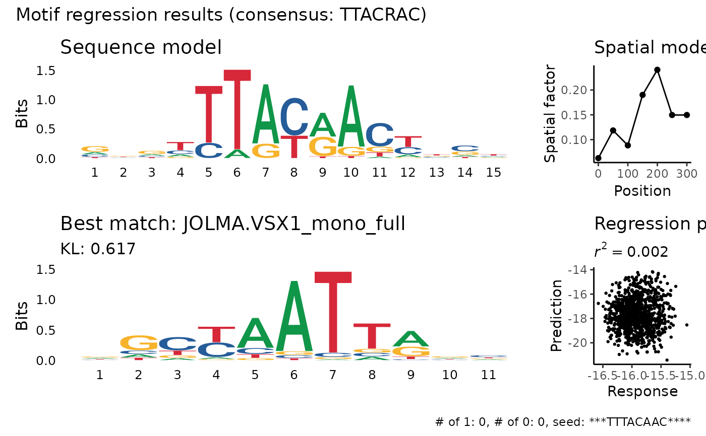

Perform a PWM regression
regress_pwm.RdPerform a PWM regression
Usage
regress_pwm(
sequences,
response,
motif = NULL,
motif_length = 15,
score_metric = "r2",
bidirect = TRUE,
spat_min = 0,
spat_max = NULL,
spat_bin = 50,
improve_epsilon = 0.0001,
min_nuc_prob = 0.001,
unif_prior = 0.05,
is_train = NULL,
include_response = TRUE,
seed = 60427,
verbose = FALSE,
kmer_length = 8,
motif_num = 1,
...
)Arguments
- sequences
A vector of DNA sequences ('A', 'T', 'C' or 'G'. Will go through
toupper)- response
A matrix of response variables - number of rows should equal the number of sequences
- motif
Initial motif to start the regression from. Can be either a string with a kmer where the character "*" indicates a wildcard or a data frame with a pre-computed PSSM (see thre slot
pssmin the return value of this function). If NULL - a K-mer screen would be performed in order to find the best kmer for initialization.- motif_length
Length of the seed motif. If the motif is shorter than this, it will be extended by wildcards (stars). Note that If the motif is longer than this, it will not be truncated.
- score_metric
metric to use for optimizing the PWM. One of "r2" or "ks". When using "ks" the response variable should be a single vector of 0 and 1.
- bidirect
is the motif bi-directional. If TRUE, the reverse-complement of the motif will be used as well.
- spat_min
start of the spatial model from the beginning of the sequence (in bp)
- spat_max
end of the spatial model from the beginning of the sequence (in bp). If NULL - the spatial model would end at the end of the sequence.
- spat_bin
size of the spatial bin (in bp).
- improve_epsilon
minimum improve in the objective function to continue the optimization
- min_nuc_prob
minimum nucleotide probability in every iteration
- unif_prior
uniform prior for nucleotide probabilities
- is_train
a boolean vector that determine which subset of sequences to use when screening
- include_response
include the response in the resulting list (default: TRUE)
- seed
random seed
- verbose
show verbose messages.
- kmer_length
The number of non-gap characters in motifs that will be screened
- ...
Arguments passed on to
screen_kmersmin_corOnly patterns for which the maximum correlation to one of the response variable is larger than min_cor will be reported
min_nOnly patterns for which the average number of occurrences in the sequences is larger than min_n will be reported
min_gap,max_gapthe length of a gap to be considered in the pattern. Only one gap, of length min_gap:max_gap, is being used, and is located anywhere in the motif. Note that this greatly expand the search space (and increase multiple tesing severly).
from_rangeSequences will be considered only from position from_range (default 0)
to_rangeSequences will be considered only up to position to_range (default NULL - using the length of the sequences)
return_matReturn a matrix of patterns and their correlation to the response variables instead of a data frame. (default: FALSE)
Value
a list with the following elements:
pssm: data frame with the pssm matrix with the inferred motif, where rows are positions and columns are nucleotides.
spat: a data frame with the inferred spatial model, with the spatial factor for each bin.
pred: a vector with the predicted pwm for each sequence.
response: The response matrix. If
include_responseis FALSE, the response matrix is not included in the list.r2: \(r^2\) of the prediction with respect to the each response variable.
ks: If response is binary, Kolmogorov-Smirnov test results of the predictions where the response was 1 vs the predictions where the response was 0.
seed_motif: The seed motif that started the regression.
kmers: The k-mers that were screened in order to find the best seed motif (if motif was NULL).
Examples
res <- regress_pwm(sequences_example, response_mat_example)
#> ℹ Number of response variables: 5
#> ℹ Screening for kmers in order to initialize regression
#> ℹ Number of response variables: 5
#> ℹ Screening kmers of length 8, from position 0 to position 300
#> ℹ minimal correlation: 0.08, minimal number of occurrences: 50
#> done normalizing response
#> new best CCACCCCC 0.00718373
#> new best CCCCACCC 0.0146177
#> done screening
#> ✔ Found 2138 kmers in 1000 sequences.
#> ℹ Initializing regression with "TTTACAAC"
#> ℹ Running regression
#> ✔ Finished running regression
res$pssm
#> psid pos A C G T
#> 1 0 0 0.17101707 0.31266135 0.1941226 0.32219896
#> 2 0 1 0.20016445 0.28261185 0.1761953 0.34102842
#> 3 0 2 0.26815110 0.24526116 0.3299702 0.15661749
#> 4 0 3 0.80165291 0.04958678 0.0537190 0.09504131
#> 5 0 4 0.03046471 0.42433441 0.2698603 0.27534056
#> 6 0 5 0.37244797 0.19862147 0.2461770 0.18275347
#> 7 0 6 0.37228289 0.08648261 0.2420855 0.29914907
#> 8 0 7 0.25095624 0.19095579 0.2256914 0.33239663
res$spat
#> psid bin spat_factor
#> 1 0 0 0.1220389
#> 2 0 50 0.1319409
#> 3 0 100 0.1985634
#> 4 0 150 0.1516449
#> 5 0 200 0.1319409
#> 6 0 250 0.1319409
#> 7 0 300 0.1319409
head(res$pred)
#> [1] -7.270413 -7.297840 -7.026858 -7.599799 -7.084934 -7.561258
plot_regression_qc(res)
#> Warning: `guides(<scale> = FALSE)` is deprecated. Please use `guides(<scale> = "none")` instead.

# intialize with a pre-computed PSSM
res1 <- regress_pwm(sequences_example, response_mat_example, motif = res$pssm)
#> ℹ Number of response variables: 5
#> Warning: argument is not an atomic vector; coercing
#> Error in if (stringr::str_length(motif) < motif_length) { motif <- stringr::str_pad(motif, motif_length, "*", side = "both") cli_alert_info("Motif is shorter than {.val {motif_length}}, extending with wildcards")}: the condition has length > 1
# binary response
res_binary <- regress_pwm(cluster_sequences_example, cluster_mat_example[, 1])
#> Error in regress_pwm(cluster_sequences_example, cluster_mat_example[, 1]): object 'cluster_sequences_example' not found
plot_regression_qc(res_binary)
#> Error in dplyr::select(., -1): object 'res_binary' not found